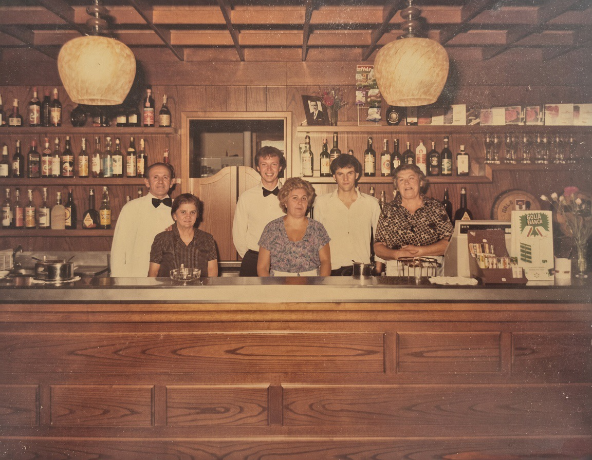
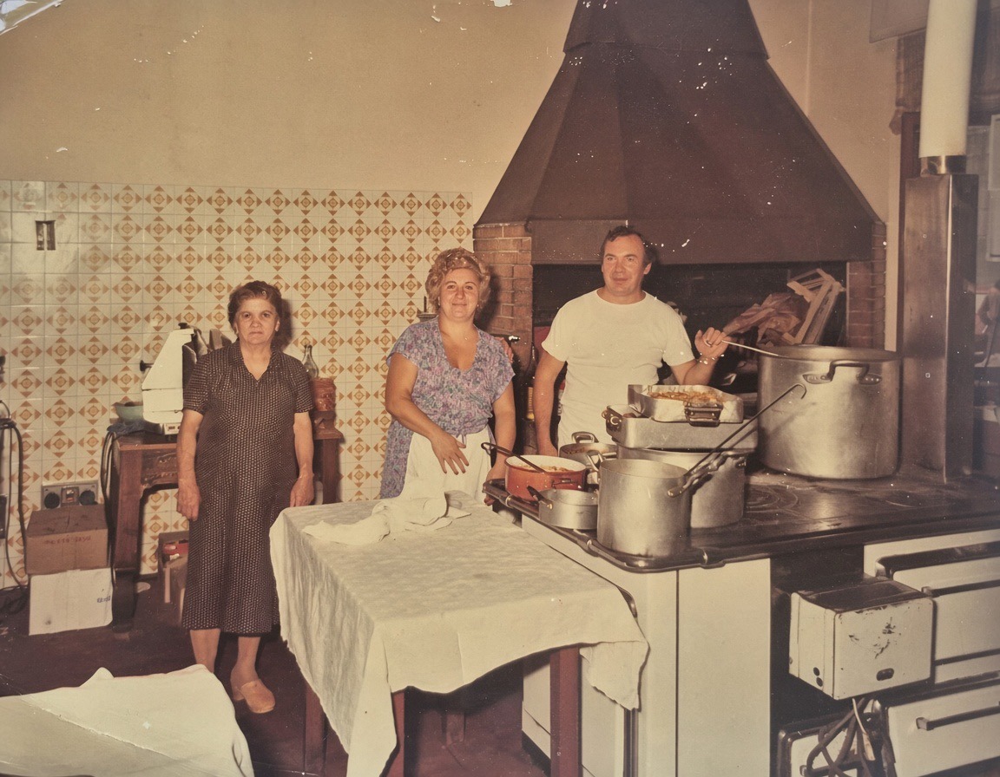
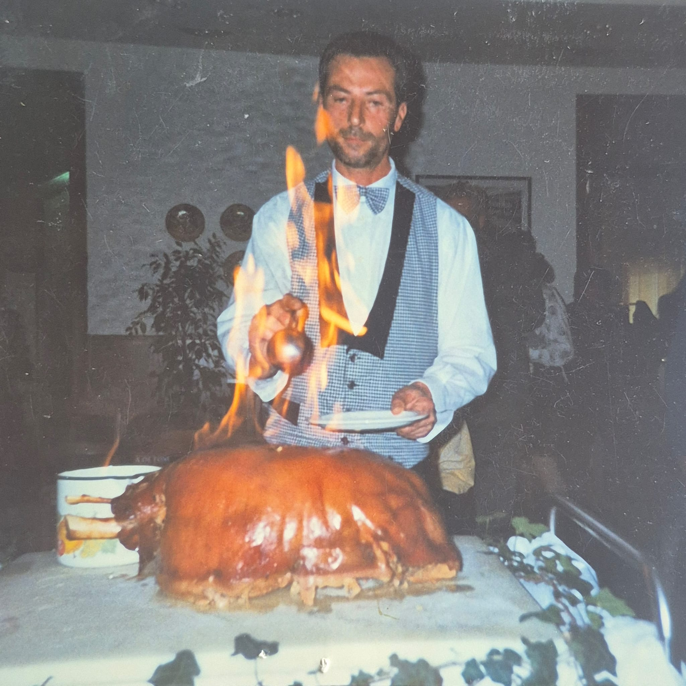
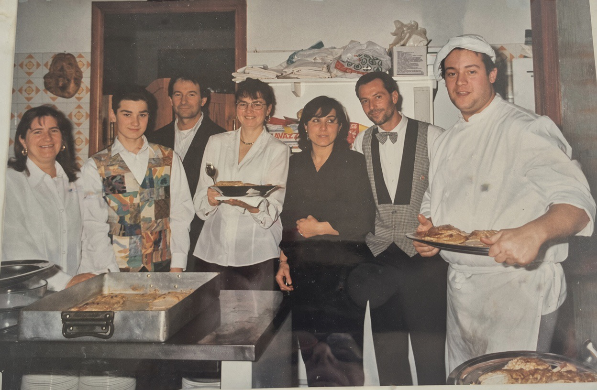
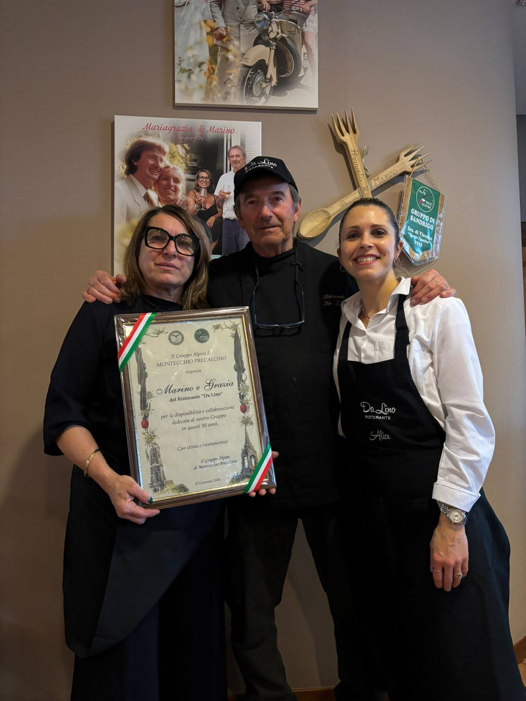

Da Lino a noi, una storia di famiglia
La storia del Ristorante Da Lino nasce da lontano, da una famiglia, da una grande passione per il lavoro e dal coraggio di affrontare, insieme, ogni nuova sfida.

Tutto inizia con Turatello Luigi, mio padre, conosciuto da tutti come Lino, nell'attività di famiglia a San Pietro in Gu, l'Ostaria da Turatea: una classica osteria, luogo di ritrovo e convivialità, dove si giocava a carte e si stava insieme.
Nel 1955, Lino sposa Anna. Insieme decidono di intraprendere un nuovo percorso e acquistano un'osteria a Levà di Montecchio Precalcino.
Nel 1962 arrivano però momenti critici e decidono di tornare a San Pietro in Gu, dando in affitto la loro osteria. Ma il desiderio di costruire qualcosa di proprio non viene mai meno.
Nel 1966, a mio padre viene proposta una nuova opportunità: una trattoria a Fara Vicentino, la Trattoria Valdastico. Era un locale capiente e il lavoro va alla grande. Per Lino e Anna è un periodo di grande impegno e soddisfazioni.
Nel 1973, Lino vende la trattoria a Levà e acquista un terreno a Fara Vicentino, in via Torricelle. È qui che, con tanto coraggio, lui e Anna decidono di fare un passo importante: costruire il loro futuro e dare vita al Ristorante Da Lino.
Nell'agosto del 1975 il ristorante apre le sue porte.


Comincia una nuova avventura, fatta di tanto lavoro e di tante soddisfazioni. Arrivano numerosi matrimoni e tante persone scelgono il Ristorante Da Lino per vivere e condividere momenti importanti.
Nel 1977, però, la vita mette Anna davanti a una nuova e difficile prova: rimane sola a portare avanti questa battaglia.
Ma Anna non si arrende. Con grande forza e tanti sacrifici continua il cammino iniziato insieme a Lino, portando avanti il ristorante e la loro storia.
Nel 1995 arriviamo noi e raccogliamo questa eredità. Anche per noi l'inizio non è facile, ma con il passare degli anni continuiamo a lavorare, a crescere e a portare avanti ciò che è stato costruito prima di noi.


Gli anni passano, ma una cosa non è cambiata: siamo ancora qua.
Il Ristorante Da Lino è una storia di famiglia, iniziata tanti anni fa e portata avanti con coraggio, sacrificio e tanto lavoro.
Una storia che continua.